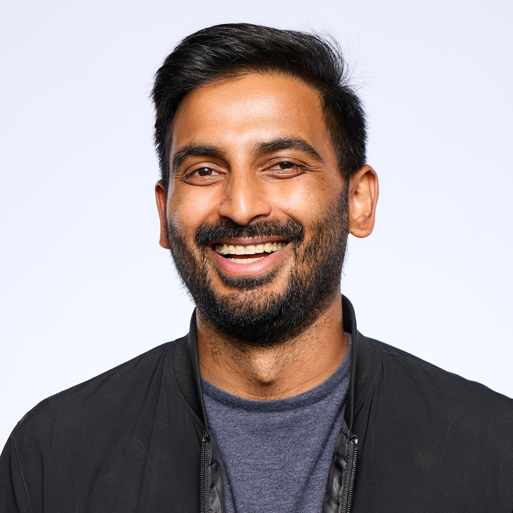

About Me

Hello!
I am currently working as a machine learning software engineer at Rivian Volkswagen Group Technologies, building applications to leverage generative AI. For the 3 years prior, I was a data scientist in the quality and reliability engineering departments, working on vehicle insights and using prognostics to guide proactive maintenance.
Before my industrial career, I was a PhD student in the Chabinyc Group at UC Santa Barbara, where I researched hybrid perovksites as an absorber material for solar cells and photodetectors.
What I Do
I build the infrastructure behind real-world AI systems. On an AI platform team, I develop tools and frameworks that power agentic applications—systems that can reason, act, and adapt in complex environments.
I’ve also worked on the Rivian Assistant, featured at Rivian AI Day 2025, focused on creating more intuitive, responsive in-vehicle experiences. My work centers on turning advanced AI into reliable, scalable products.
Interests
Outside of work, I enjoy photography, playing guitar, and traveling to new places. Feel free to check out my photo gallery or read some of my blog posts.
If you'd like to get in touch, feel free to reach out through any of my social media channels or send me an email.